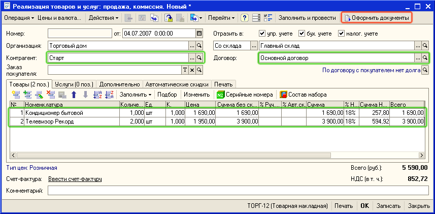
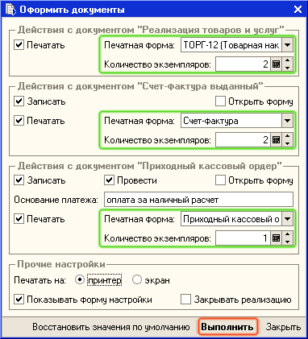
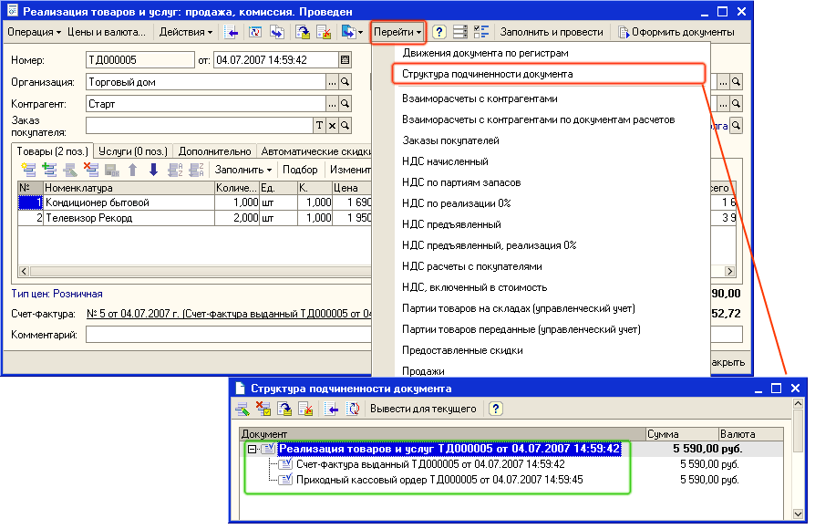

В данном разделе будет рассматриваться оформление продажи за наличный расчет при оптовой торговли с выпиской всех необходимых документов - Приходный кассовый ордер, Торг-12, Счет-фактура.
1. Оформите новый документ Реализация товаров и услуг для нового контрагента "Старт". Для оформления нового документа откройте список документов Реализация товаров и услуг (пункт меню Документы - Продажи - Реализации товаров и услуг ). Создайте новый документ Реализация товаров и услуг с помощью нажатия кнопки  (или нажмите клавишу Insert или выберите меню Действия — Добавить). Заполните реквизиты документа значениями так, как показано на рисунке:
(или нажмите клавишу Insert или выберите меню Действия — Добавить). Заполните реквизиты документа значениями так, как показано на рисунке:

2. Нажмите на кнопку Оформить документы и укажите параметры для создания пакета документов (Приходный кассовый ордер, Торг-12, Счет-фактура) и их печати.

3. Нажмите на кнопку Выполнить. Документы будут сформированы и распечатаны.
Важно. При оформлении наличной оплаты юридическим и физическим лицам необходимо пробитие чека на ККМ. Пробитие чека на ККМ осуществляется нажатием кнопки Чек в форме ПКО. Пробитие чека возможно только в том случае, если подключена ККМ, работающая в режиме Фискального регистратора.
Примечание. Введенные настройки сохранятся при следующем сеансе работы с программой. Если Вы не хотите, чтобы диалоговое окно настройки показывалось при оформлении документов уберите флаг Показывать форму настройки при формировании документов. Диалоговое окно настройки можно также вызвать из формы документа Заказ покупателя, если выбрать пункт меню Действия - Открыть форму настройки оформления пакетов документов.
Совет. Быстрое формирование пакета документов может быть использовано и в заказе покупателя, в том случае, если заказ оплачивается с помощью платежного поручения. В заказе для быстрого оформления пакета документов используется кнопка Оформить реализацию.
Для просмотра списка документов, оформленных по документу реализации нажмите на кнопку Перейти и выберите пункт Структура подчиненности документа, как это показано на рисунке.

Только что Вы научились оформлять быструю продажу за наличный расчет. В следующем разделе Вы узнаете как оформить передачу товаров на комиссию.
Следующий раздел: «Работа с о сторонними магазинами (передача товаров на комиссию)»